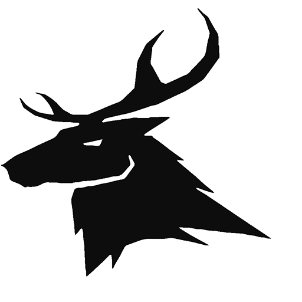

 원격도움 요청하기
Parsec을 이용한 원격제어로 도움을 받을 수 있습니다.
아래의 도움말을 따라 Parsec을 설치하면 됩니다.
1. 여기를 클릭하여, Parsec 사이트로 이동합니다.
2. 우측 상단의 Log In 버튼을 눌러 회원가입을 진행합니다.
Download에서는 프로그램 설치파일을 받아 설치합니다.
(이 도움말 글에서 적용된 링크를 클릭해도, 바로 간편하게 회원가입이나 다운로드 페이지로 이동됩니다.)
2-1. 회원가입은, Log In에서 이동한 화면의 아래에 Sign Up을 누르면 진행됩니다.
사용하는 Email 주소를 아이디로서 가입할 것이고, 가입 인증 메일도 날아올 것입니다.
3. 프로그램도 설치하고 나면,
압축을 풀고, ParsecHelper.exe를 실행합니다.(원형 아이콘. 흰색 배경에 검은 사슴)
(Parsec의 Host 설정을 미리 설정해 둔 파일로 덮어쓰게 됩니다.)
4. Parsec이 재실행되면, 이제 로그인을 해줍니다.
(도우미 실행 전에 로그인을 미리 했어도 상관없습니다. 순서가 꼬일 염려는 없습니다.)
5. Host 설정으로 가서, Hosting Enabled를 Enabled로 설정합니다.
(아래의 속도나 해상도 등의 설정은 위에서 도우미로 미리 설정된 값으로 설정되었을겁니다.)
6. 다시 처음의 Computers로 가서, This Computer를 Share합니다.
(This Computer가 보이지 않으면, 우측 상단에 Reload를 눌러줍니다.)
7. 이제 원격으로 컴퓨터를 열었습니다. Share를 하면서 생성된 접근용 코드를 알려주시면 됩니다.
(이제부터 이 수술은 내가 집도한다.)
p.s. Parsec은 설치시에 기본적으로 컴퓨터가 켜질 때마다 항상 같이 켜지도록 되어 있습니다.
이것이 싫은 분들은 우측 아래의 트레이아이콘을 우클릭하여, 이 옵션을 끄면 됩니다.